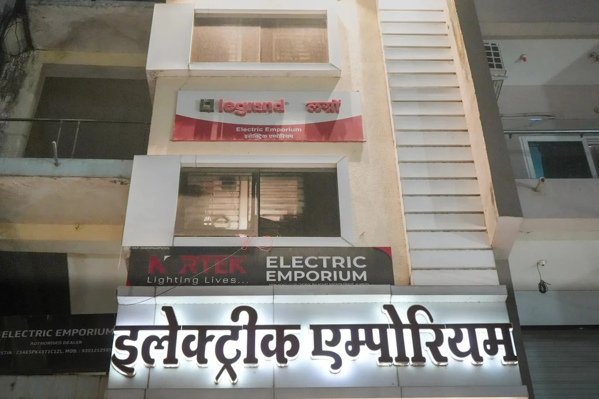

BALAGHAT, SINCE 1989
Electric Emporium.
A family story.
THE KATARIYA FAMILY
Two generations.
One address.
In 1989, Manoj Katariya opened Electric Emporium on Main Road, Gujri Chowk. What started as one person's vision became a family business, joined by his brothers Sanjay and Vikesh Katariya.
Today, Yash Katariya carries that story into a new generation. The collection has grown, but the idea is the same: help people choose genuine electrical products with confidence.
These are the photographs, people and little pieces of history that make the store ours.
FROM OUR ARCHIVES
2000
Eleven years in.
A story already unfolding.
A newspaper advertisement from 2000, when Electric Emporium was eleven years old. The same family, the same address, and a small piece of Balaghat's everyday history.
THE STORY CONTINUES
Come say hello.
Main Rd, Gujri Chowk, Chitragupt Nagar
Balaghat, Madhya Pradesh 481001
Every day, 10:00 AM to 9:00 PM